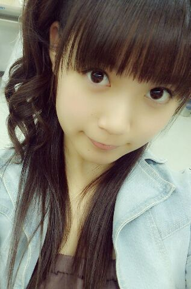
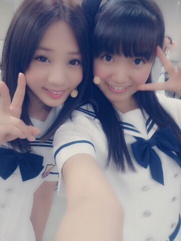
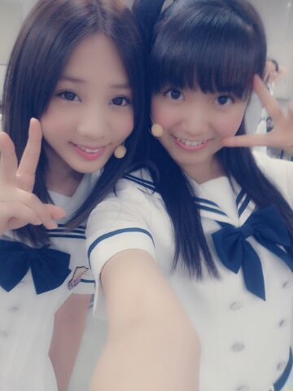

| 2013/08 18 Sun | ひめたん(*>ω<*)そ の327 |

前回はたくさんのコメント
本当にありがとうございました！
初コメさんがたくさんいらっしゃって
びっくりしましたー
ほんとに嬉しいよーこれからよろしくね(〃ω〃)
そしていつものひめきゅんさんには
テレビでなんかやってる姿を観てもらえて
こちらも嬉しいよーいつもありがとー！
さゆにゃーんブログ読んだよーありがとー///
そうなんですーいよいよねー
全国ツアー初日の札幌まであと２日ですかー
やばいですねーなにせ初北海道ですからねー
あ初ってのは
乃木坂のライブって意味もあり
ひめたん自身行ったことないのよー
北海道は涼しいって聞いておるよー
北海道民のみなさんおじゃましまーす♪

ねーこの写め
貼ったことあったっけー(´・ω・｀)？
お知らせ☆
ひめたんデザインのTシャツが
Official Web Shop とかで販売してるよー！
白いからこれ着てカレーうどんとか
食べちゃだめだよー

でね、そう目覚まし時計。
そんなつもりで話したんじゃなかったけど
ホラー話かそれは！って言われて
え？そうなのこれやばいやつなの(´・ω・｀)？
電池１本抜いたのにってゆったけど
あくまで電池は元々４本入れるやつで
そのうちの１本抜いたからさんぼん...
もー面倒だからいーやー
とにかく万能なんだか迷惑なんだか
よーわからんねって話。
頑張って止まったら報告するからね！
家で目覚まし時計拾うって
どーゆーことよって
愛のあるツッコミをありがとー∩^ω^∩
えっと、なんでそーなったのか、
想像してみよう！私は質問に答える！
前回はたくさんのコメント
本当にありがとうございました！
初コメさんがたくさんいらっしゃって
びっくりしましたー
ほんとに嬉しいよーこれからよろしくね(〃ω〃)
そしていつものひめきゅんさんには
テレビでなんかやってる姿を観てもらえて
こちらも嬉しいよーいつもありがとー！
さゆにゃーんブログ読んだよーありがとー///
そうなんですーいよいよねー
全国ツアー初日の札幌まであと２日ですかー
やばいですねーなにせ初北海道ですからねー
あ初ってのは
乃木坂のライブって意味もあり
ひめたん自身行ったことないのよー
北海道は涼しいって聞いておるよー
北海道民のみなさんおじゃましまーす♪

ねーこの写め
貼ったことあったっけー(´・ω・｀)？
お知らせ☆
ひめたんデザインのTシャツが
Official Web Shop とかで販売してるよー！
白いからこれ着てカレーうどんとか
食べちゃだめだよー
でね、そう目覚まし時計。
そんなつもりで話したんじゃなかったけど
ホラー話かそれは！って言われて
え？そうなのこれやばいやつなの(´・ω・｀)？
電池１本抜いたのにってゆったけど
あくまで電池は元々４本入れるやつで
そのうちの１本抜いたからさんぼん...
もー面倒だからいーやー
とにかく万能なんだか迷惑なんだか
よーわからんねって話。
頑張って止まったら報告するからね！
家で目覚まし時計拾うって
どーゆーことよって
愛のあるツッコミをありがとー∩^ω^∩
えっと、なんでそーなったのか、
想像してみよう！私は質問に答える！

 ひめたんビームとさゆりんごパンチは
ひめたんビームとさゆりんごパンチは
どっちが強いの？笑
うーん...
その質問はー
世界の規律を崩す質問なので
答えれませーん(o・・o)
by さゆりんご(o・・o)
ひめたんはカラオケとかよく行くの？
行きたいーとはいつも言ってるよー
今日もろってぃーと
またカラオケ行こーって話したよー(*^ω^*)♪
ずっと気になってたんだけど
ガールズルールのプールのシーン、
転びそうにならなかった？？
出てません！一切出ません！
...なんてね。元ネタはご存知ですか？(笑)
ひめたんが手書きで書いている
ねこ？の名前ってなんていうの？
とりあ にゃんこ様と呼んでいますが
素敵な名前があったらどうぞこちらまで。
今行きたいっ!!!!!!って思うところはどこぉ??
あしゅはボラボラ島に行きたいんだってー
ひめたーんはどこいこっかなー
おかしのおうちーとか行ってみたいけど
その前にマッサージに...
か、川後P！！
これからでも推していいかなーー
推し増しで、ひめきゅんになってもいいかな
うはああ嬉しいよー(´;ω;`)感涙
頭があがらんぜです。
これからもめっちゃ頑張ります！
「銀色の週末」って曲
ひめたん知ってますか??
知らなかった！ぐぐってきます( ω )
個握で歌ってってお願いしたらダメかな？
だめじゃないよー歌うの好きだよー♪
リクエストお待ちしておりまっす
距離めちゃ近いのは覚悟しとってね///
歌うときのコツはありますか？
自信をもって堂々と、が一番かしらねー
自信ないのでアドバイスできる立場でもないけど
ひめたんは心から楽しんで歌ってるよー☆
ひめたーん。ひめたーん。
・・・こっちふりかえってくれるかな？←
はーい( ^ω^ )/
ひめたんってほんと
絵に描ける顔してるよねーて
らりんに言われました。
そ、それは...
描いてらりん！
てかみなさん描いてみて！
そんでひめたんにみせてー！

(＊´・ω・＊)
コメント(312)
2013/08/18 00:30